Guidewire tracking plays an important role in minimally invasive vascular interventions, where clinicians rely on real-time X-ray fluoroscopy to navigate guidewires through narrow vascular structures. Guidewires are not always clearly visible in fluoroscopy, and annotated real-world datasets are difficult to access, which makes automated tracking challenging.
This thesis presents a simulation-based approach for training deep learning models to detect and track guidewires. Realistic Digitally Reconstructed Radiographs (DRRs) are generated from CT angiography volumes and enhanced with simulated guidewire movement and temporally varying deformation fields that model cardiac motion. The result is a set of anatomically realistic, automatically annotated training sequences.
To bridge the domain gap between synthetic and real X-ray images, an unsupervised domain adaptation pipeline based on domain augmentation and iterative pseudo-labelling is proposed. A YOLOv8 detector trained on DRRs is fine-tuned on its own high-confidence predictions on unannotated real X-ray, and QDTrack is evaluated for comparison. On real clinical datasets, the pipeline achieves competitive tracking performance without relying on any annotated real images.
A guidewire is a thin, flexible medical wire used to access and navigate blood vessels in minimally invasive procedures such as angioplasty, stent placement and catheterization. It is the first instrument to cross narrowed or blocked segments and serves as the rail along which balloons, catheters and stents are advanced. Its thin metallic structure makes it difficult to see in fluoroscopy; often only the tip appears as a faint, moving line.
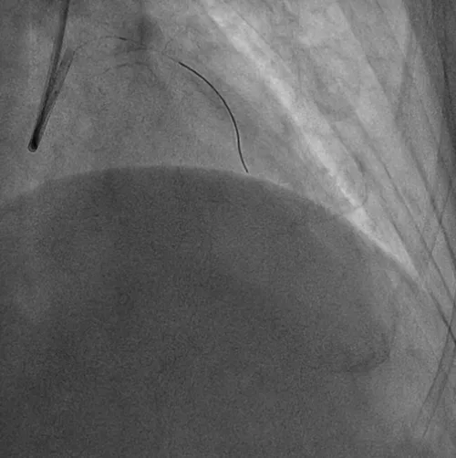
During coronary interventions, the guidewire is advanced through the arteries under live, low-dose X-ray. Automatic tracking of the guidewire is challenging for several reasons:
The main limitation is data. Clinical X-ray sequences are difficult to obtain for ethical and privacy reasons, and frame-by-frame annotation of a thin wire requires expert time. This work investigates whether a tracker trained only on synthetic sequences generated from CT can generalize to real fluoroscopy, and which methods are needed to close the remaining domain gap.
The method consists of two parts. The simulation part builds an annotated synthetic dataset from CT. The learning part trains detection and tracking models on this dataset and adapts them to real X-ray using unannotated clinical frames.
Two CT angiography sources are used. The 4D CTA dataset provides motion over a full cardiac cycle, and the ASOCA dataset provides anatomical variety. For 4D CTA, the heart, vessels and coronary arteries are segmented with TotalSegmentator [4], the volume is cropped to the chest to reduce GPU memory, the coronary masks are cleaned and centerlines are extracted. Each centerline is converted into a graph, and routes between terminal points are searched; only routes long enough to traverse a vessel are kept and categorized as left or right coronary tree.
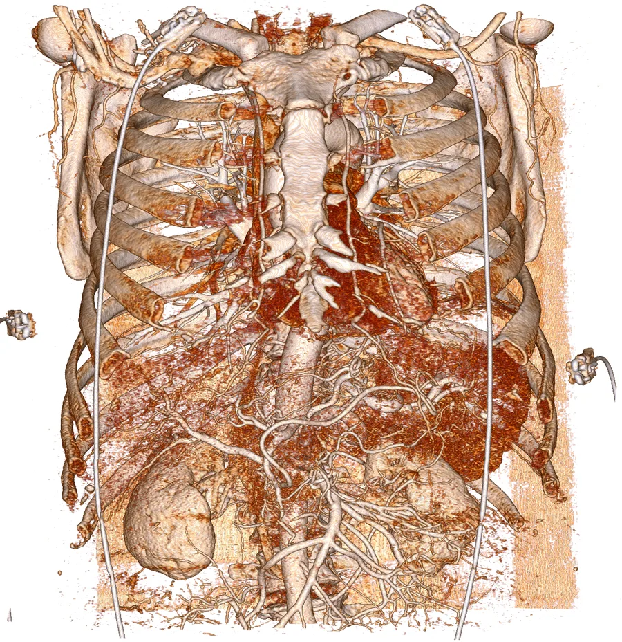
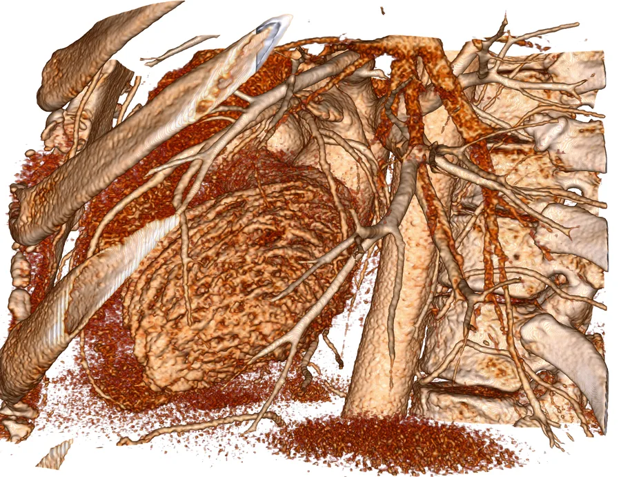
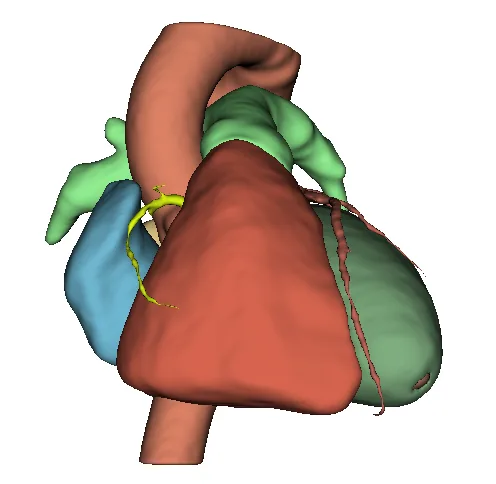
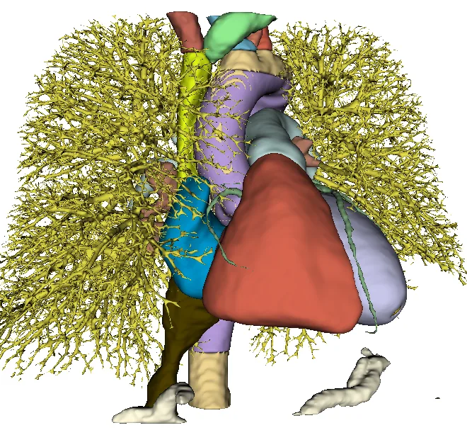
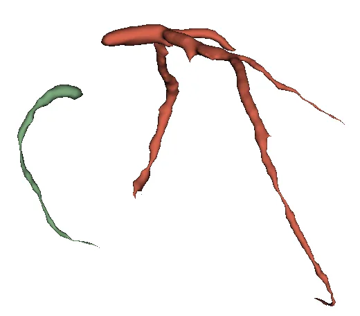
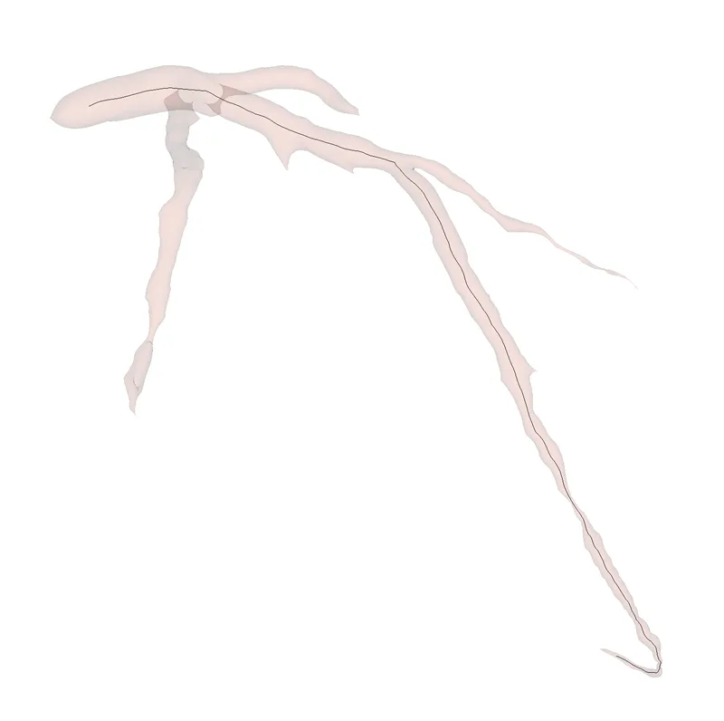
Each of the 20 phases of a 4D CTA sequence is registered to the first phase with elastix [5], using a B-spline free-form deformation with a 16-voxel control-point spacing and up to 500 iterations. Transformix converts each result into a dense deformation field. Because ASOCA volumes are static, each ASOCA scan is rigidly registered to a 4D CTA reference and the 4D deformation fields are transferred to it, producing pseudo-temporal sequences with realistic cardiac motion.
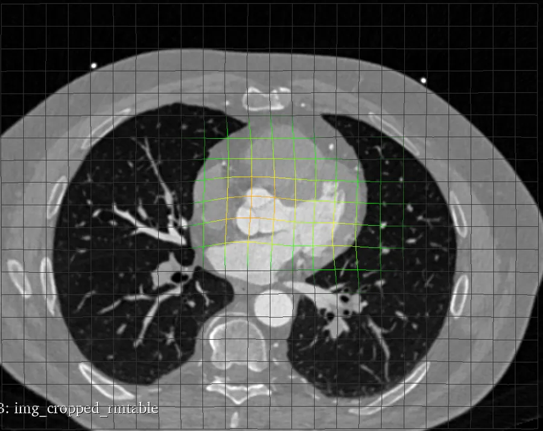
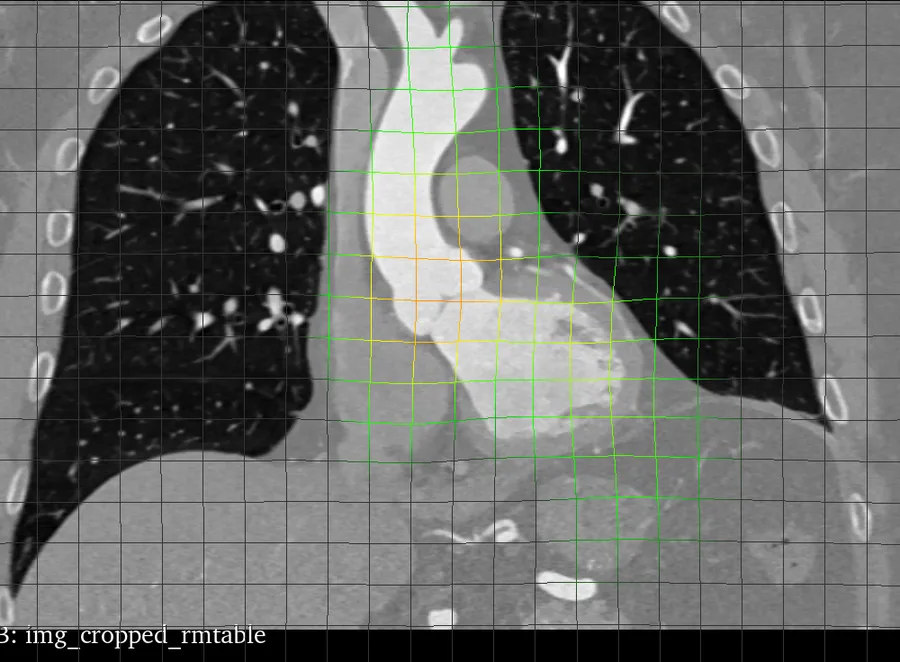
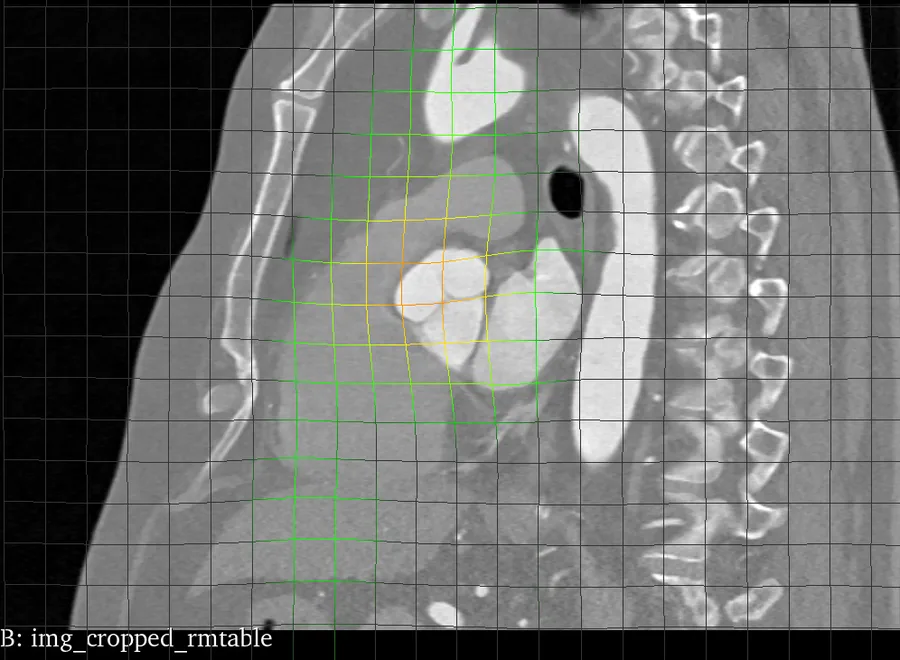
Deformation field between two cardiac phases. Warm grid lines mark the largest displacement around the heart.
At each time step, the guidewire tip is advanced along a route and inserted into the volume as tungsten. The current deformation field is applied to both anatomy and wire, and DiffDeepDRR [3] projects the volume into a DRR with a realistic X-ray spectrum and C-arm geometry. Each route is rendered from 7 clinical viewing angles for the left coronary tree and 4 for the right. Volumes are resampled to 0.4 mm, since coarser spacing fragments the thin wire. Every frame is produced together with its guidewire mask, so annotations are obtained without manual annotation.
Some viewing angles hide or foreshorten the wire into implausible shapes, which would introduce false positives during training. All sequences were therefore reviewed manually and 258 were discarded. The remaining sequences were resampled to 15 evenly spaced frames each and split by sequence to avoid leakage between training and evaluation.
Both models follow the tracking-by-detection paradigm and represent opposite ends of the speed and accuracy trade-off.
| Model | Trained on | HOTA | MOTA | IDF1 | FPS |
|---|---|---|---|---|---|
| YOLOv8n + BoT-SORT | Synthetic | 79.1 | 97.7 | 98.8 | ~80 |
| QDTrack | Synthetic | 90.6 | 97.7 | 98.8 | ~10 |
In-domain results on the synthetic test split.
QDTrack achieves a higher HOTA, but its inference speed of about 10 FPS is too low for live fluoroscopy. The domain adaptation pipeline is therefore built on YOLOv8, which runs at about 80 FPS.
Trained on raw DRRs, the tracker drops from HOTA 79.1 on synthetic data to 56.3 on the real single-guidewire set and to 25.3 on the double-guidewire set. DRRs differ from real fluoroscopy in noise, contrast and intensity distribution. Since the trackers associate frame-wise detections, the domain gap is addressed at the detection stage: a more robust detector directly yields more consistent trajectories. The proposed pipeline combines domain augmentation with iterative pseudo-labelling and requires no real annotations.
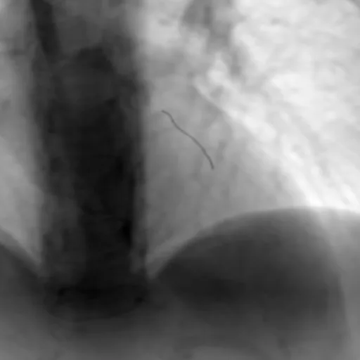
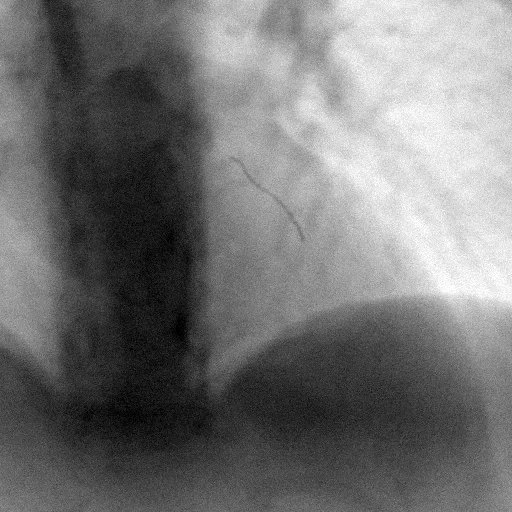
Three lightweight, training-free transforms bring the synthetic images closer to the target domain. Fourier Domain Adaptation [8] transfers the low-frequency spectrum of real X-ray frames (one reference frame per real sequence) onto DRRs, Gaussian noise imitates sensor noise, and gamma correction varies brightness and contrast. The augmentations are applied to 30% of the training set, which preserves the original DRRs while adding examples that reflect the characteristics of the target domain.
The detector trained on augmented DRRs is applied to 3,770 unannotated frames from the training split of the single-guidewire dataset. Only detections with a confidence of at least 0.9 are accepted as pseudo labels. The detector is then fine-tuned on these pseudo-labelled real frames only, without merging the simulation data back in, and the cycle is repeated for 10 iterations. Pseudo labels from earlier iterations are carried over, and each iteration only annotates frames that have not been annotated yet, so the model progresses from easy to harder examples. Training stops early when the validation performance does not improve for five epochs.
The number of pseudo-labelled frames and their average confidence are monitored at every iteration. The last iteration annotates the largest share of the target data while keeping high confidence, and is therefore selected as the final model.
Pseudo-labelled frames and their average confidence per iteration. The number of pseudo labels grows from about 970 to about 2,740 of 3,770 frames while the average confidence stays above the 0.9 threshold. Hover a point for its value.
Tracking accuracy is measured with TrackEval using three complementary multi-object tracking metrics. Inference speed is reported in frames per second (FPS) on the same GPU for all models.
Higher Order Tracking Accuracy jointly evaluates detection, association and localization, averaged over localization thresholds α. It is the primary metric in recent tracking work.
Multiple Object Tracking Accuracy counts false negatives, false positives and identity switches relative to the number of ground-truth objects. It is highly sensitive to detection quality and can become negative.
The ratio of correctly identified detections over the average number of ground-truth and predicted detections. It measures how consistently identities are maintained over time.
Evaluation is performed on two real datasets. The test split of the single-guidewire dataset was never used during training. The double-guidewire dataset was excluded from training and pseudo-labelling entirely and serves as a test of cross-dataset generalization. The explorer below shows the contribution of each component of the pipeline.
Same tracker trained on annotated real X-ray, for reference
The baselines are trained on the annotated training split of the single-guidewire dataset. The proposed pipeline uses the same frames without their annotations.
| Model | Training data | HOTA | MOTA | IDF1 | FPS |
|---|---|---|---|---|---|
| Single-guidewire test set | |||||
| YOLOv8n + BoT-SORT | Annotated real X-ray | 73.0 | 83.9 | 91.7 | ~80 |
| QDTrack | Annotated real X-ray | 85.1 | 93.1 | 94.1 | ~10 |
| Proposed UDA pipeline | DRR + unannotated real X-ray | 76.7 | 92.5 | 96.2 | ~80 |
| Double-guidewire dataset, not used in training | |||||
| YOLOv8n + BoT-SORT | Annotated real X-ray | 62.0 | 71.4 | 81.9 | ~80 |
| QDTrack | Annotated real X-ray | 70.4 | 86.7 | 89.4 | ~10 |
| Proposed UDA pipeline | DRR + unannotated real X-ray | 70.8 | 87.4 | 93.3 | ~80 |
Metrics as defined in Evaluation metrics, computed with TrackEval.
On the single-guidewire test set, the adapted YOLOv8 tracker outperforms the same tracker trained on annotated real data in all three metrics. QDTrack retains a higher HOTA at roughly one eighth of the speed. On the unseen double-guidewire dataset, the proposed pipeline matches QDTrack in HOTA and achieves the highest MOTA and IDF1 of all models. The stronger generalization is attributed to the variety of the simulated data, which covers far more anatomies, viewing angles and motion patterns than the small set of annotated real sequences.
Supervised by Prof. Dr. Nassir Navab and advised by Baochang Zhang at the Chair for Computer Aided Medical Procedures, Technical University of Munich. Real X-ray sequences are from clinical datasets used within the research collaboration.